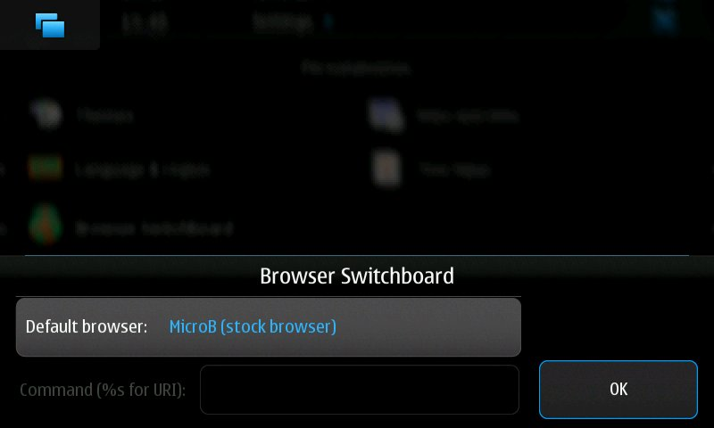
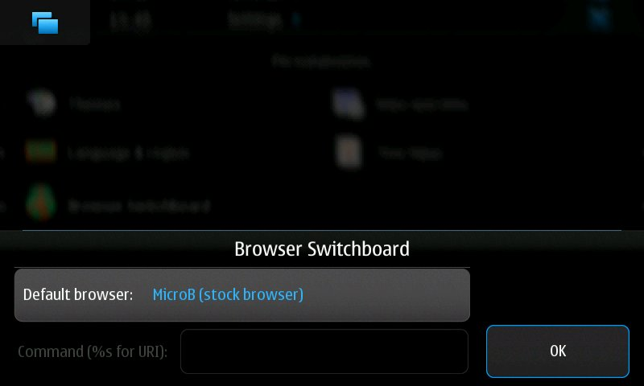
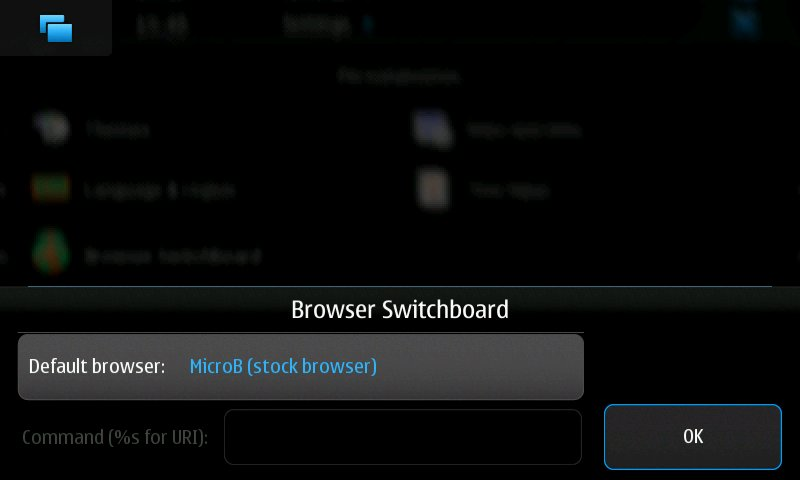

Browser Switchboard (formerly browser-proxy) is a program which allows you to choose which browser to use as the default browser on Maemo devices. It supports MicroB, Tear, Mobile Firefox, Opera Mobile, and Midori out of the box, and can also be used to launch MicroB without having browserd running.
Version 3.2-2 (2010/05/28) (Diablo one-click install, Beta-quality Fremantle package)
For Diablo/Maemo 4.1, the recommended way to install Browser Switchboard is via the Maemo Extras repository, which is enabled by default in the Application Manager. You should find Browser Switchboard in the Application Manager catalog under the network category. Alternately, if you're viewing this page on your Diablo device, opening the one-click install will install the package from Maemo Extras for you.
Source code and packages can also be found on the Maemo Garage download page.
For Fremantle/Maemo 5, beta-quality packages and source code can be found on the Maemo Garage download page. Packages can also be installed from the Maemo extras-devel repository (though don't blindly enable extras-devel and install/upgrade — see the linked page first!)
For Diablo/Maemo 4.1, just open the one-click install in a browser on your device and follow the instructions to install Browser Switchboard.
For Fremantle/Maemo 5, or if you want to install the package by hand:
You can now select the default browser by using the Browser Switchboard
applet in the Control Panel. Links in most applications, locally-saved
web pages opened from the file manager, and (for Maemo 4.x) entries in
the Web sidebar panel will open in the browser that you select as the
default. Opening the "Web" menu entry and running "browser" from the
shell will also cause your chosen default browser to open. If you don't
configure a default browser, MicroB will continue to be used as the
default browser.
No matter which browser you select as the default, MicroB can always be opened via the MicroB menu entry in the applications menu (for Maemo 4.x, installed in the Extras menu by default), or by running "microb" from the shell. While MicroB is open, it will receive all links from other applications; closing MicroB will restore your chosen default browser.
If you experience trouble after installing the package, try rebooting your device. If that fixes things, please report this as a bug.
See the README for further instructions on how to configure and use Browser Switchboard.
You can email your question to the maintainers (see below), or you can take it to the Browser Switchboard thread on the talk.maemo.org forums.
The latest source is available via a Git repository; you can check it out by running
git clone https://git.maemo.org/projects/browser-switch
from a shell. You can also browse the repository using gitweb.
Bug reports and patches can be emailed to the maintainers, or posted on the forum thread.
Steven Luo <steven+maemo [at] steven676.net> is the primary maintainer of Browser Switchboard, with assistance from Jason Simpson (the original developer).